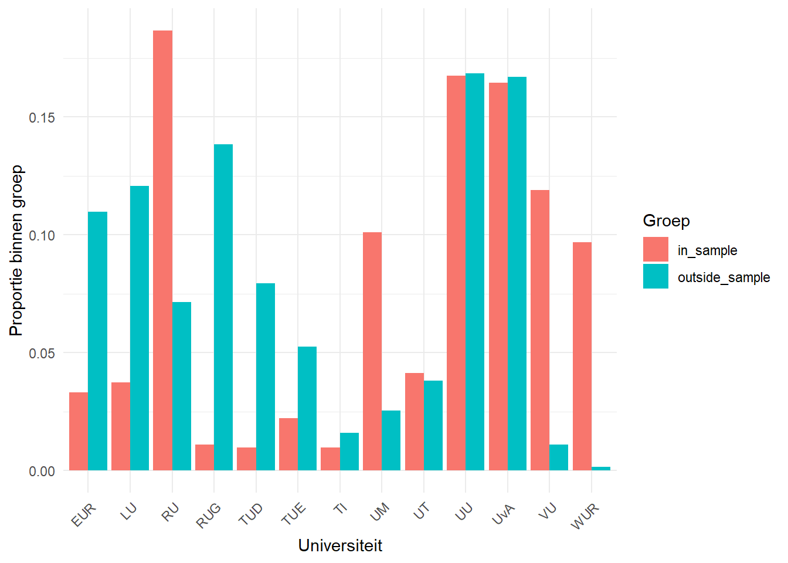
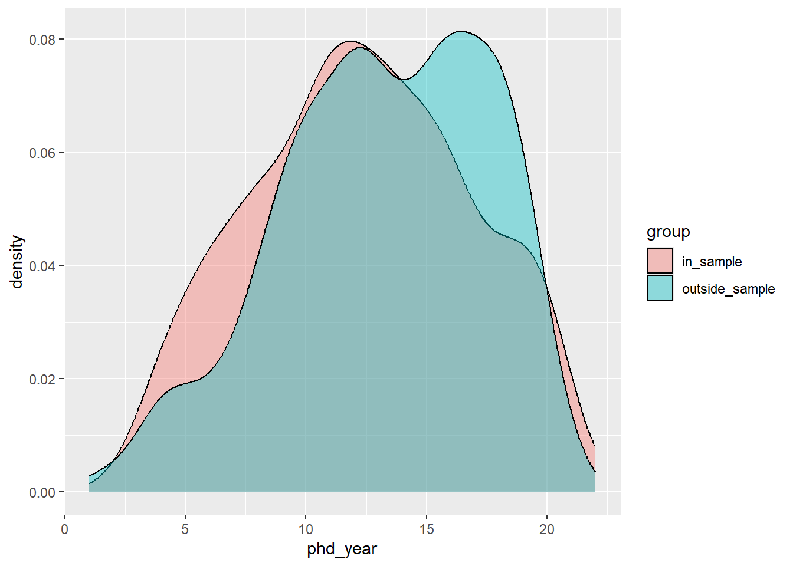
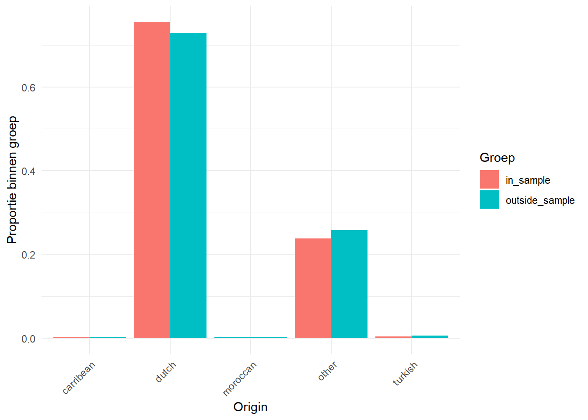
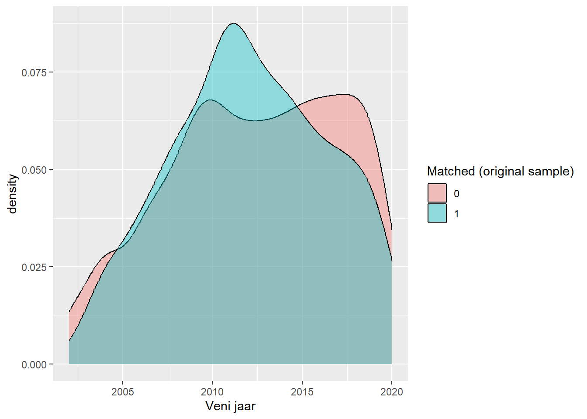
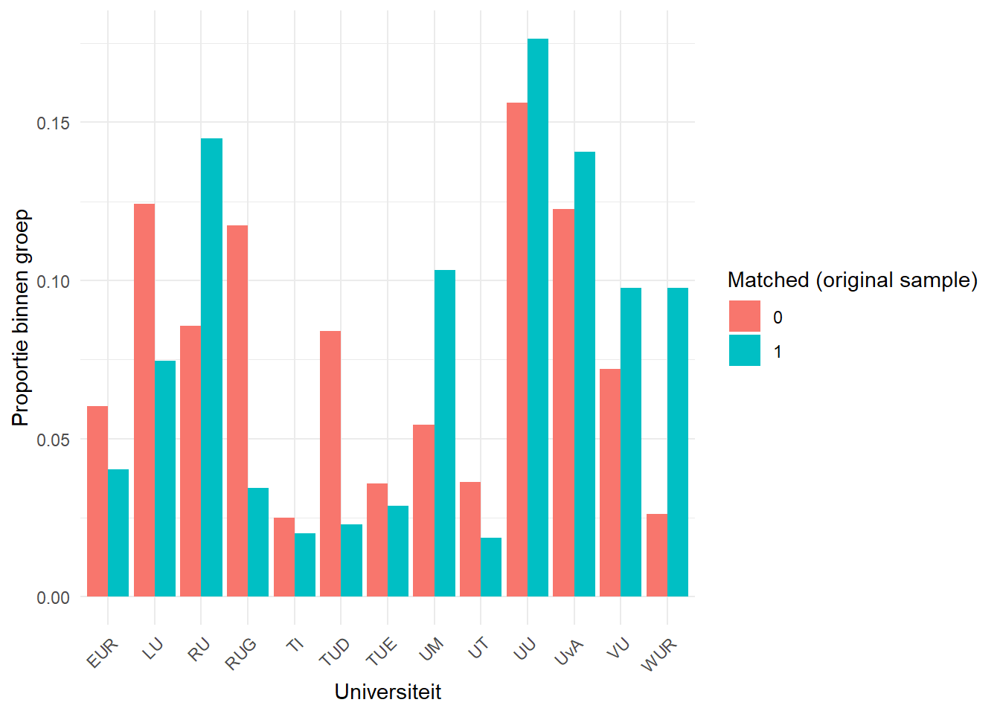
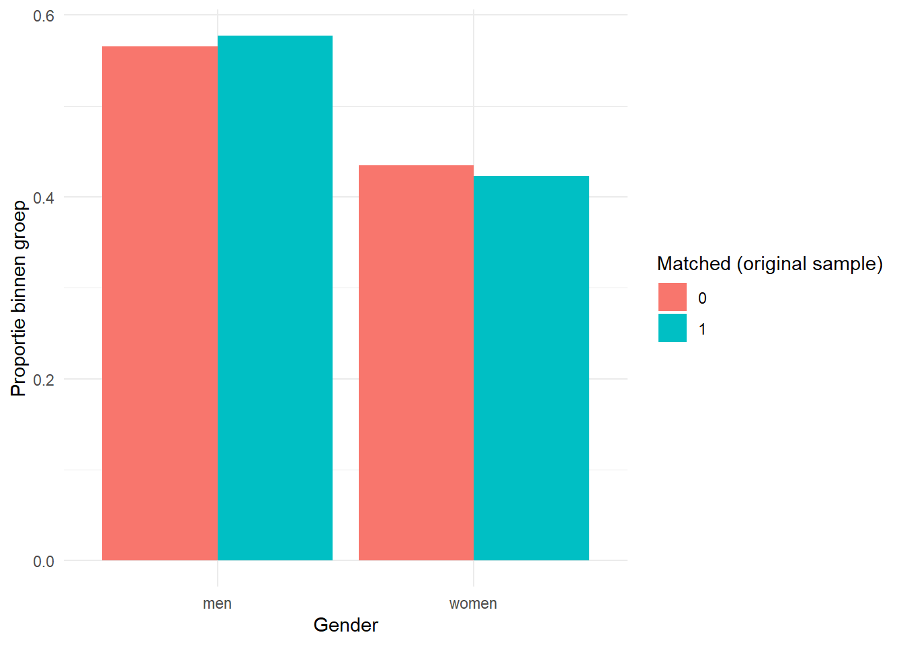
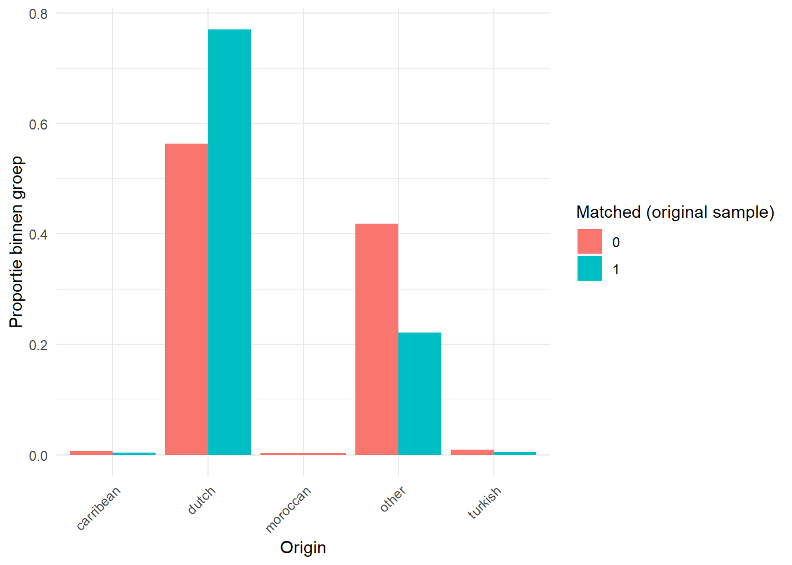

Our sample of Veni laureates is constructed by starting from the population of scholars who obtained doctorate in the Netherlands and matching them to NWO Veni grant records. This appendix is used to assess whether our matching procedure introduces selection bias into the sample of laureates we analyze.
To do so, we took the following steps:
Building the comparison groups above requires linking individuals by name and by a unique person identifier, and our ethnicity/origin variable is derived from surnames. This underlying data cannot be shared on this replication website for privacy reasons.
To keep this appendix both transparent and reproducible, we use a hybrid setup:
eval=FALSE. They are included to
demonstrate how we matched Veni’s to PhDs, but cannot be executed
because they require non-anonymised data.fpackage.check(): checks whether packages are installed
(and installs them if not) (source).rm(list = ls())
fpackage.check <- function(packages) {
lapply(packages, FUN = function(x) {
if (!require(x, character.only = TRUE)) {
install.packages(x, dependencies = TRUE)
library(x, character.only = TRUE)
}
})
}packages <- c("tidyverse", "stringr", "stringi", "zoo", "kableExtra")
fpackage.check(packages)## Loading required package: tidyverse## ── Attaching core tidyverse packages ──────────────────────── tidyverse 2.0.0 ──
## ✔ dplyr 1.2.1 ✔ readr 2.2.0
## ✔ forcats 1.0.1 ✔ stringr 1.6.0
## ✔ ggplot2 4.0.3 ✔ tibble 3.3.1
## ✔ lubridate 1.9.5 ✔ tidyr 1.3.2
## ✔ purrr 1.2.2
## ── Conflicts ────────────────────────────────────────── tidyverse_conflicts() ──
## ✖ dplyr::filter() masks stats::filter()
## ✖ dplyr::lag() masks stats::lag()
## ℹ Use the conflicted package (<http://conflicted.r-lib.org/>) to force all conflicts to become errors
## Loading required package: stringi
##
## Loading required package: zoo
##
##
## Attaching package: 'zoo'
##
##
## The following objects are masked from 'package:base':
##
## as.Date, as.Date.numeric
##
##
## Loading required package: kableExtra
##
##
## Attaching package: 'kableExtra'
##
##
## The following object is masked from 'package:dplyr':
##
## group_rowsSome code to make the tables look more readable.
# Basic kable styling, reused for every table below
fkable <- function(df, digits = 3, caption = NULL) {
df %>%
kable("html", digits = digits, caption = caption) %>%
kable_styling(bootstrap_options = c("striped", "hover", "condensed", "responsive"), full_width = FALSE)
}
# Turns a prop.table()/table() crosstab into a readable table, with the row
# variable (e.g. group, matched_original) as its own first column
fkable_prop <- function(tab, rowname = " ") {
tab %>%
as.data.frame.matrix() %>%
tibble::rownames_to_column(rowname) %>%
fkable(digits = 3)
}
# Turns a chisq.test()/wilcox.test() result into a one-row readable table
fkable_test <- function(test, digits = 3) {
# capture values first: naming a tibble column "test" while `test` is also
# the argument would otherwise make later rows see the new column instead
# of the original htest object
test_name <- test$method
test_statistic <- unname(test$statistic)
test_df <- if (!is.null(test$parameter)) unname(test$parameter) else NA_real_
test_p <- test$p.value
tibble::tibble(
test = test_name,
statistic = test_statistic,
df = test_df,
p.value = test_p
) %>%
fkable(digits = digits)
}We load the processed PhD and Veni datasets used throughout the
paper, plus two small manually-coded lookup files used to fill in gender
and ethnicity/origin for laureates that could not be classified
automatically
(review-resub/gender_veni_additional_filled.csv and
review-resub/ethnicity_veni_additional_cleaned.csv). These
files contain names and unique person identifiers and are not published;
this chunk is shown for transparency only.
load(file = "data/processed/phds_variables.rda")
load(file = "data/processed/phd_supervisors.rda")
load(file = "data/processed/veni_ppf.rda")
load(file = "data/processed/veni_ppf_r2.rda")
load(file = "data/processed/veni_narcis_p.rda")
load(file = "data/processed/veni_NWO_p.rda")
load(file = "data/processed/fn_gender.rda")
genderize_addit <- read.csv(file = "review-resub/gender_veni_additional_filled.csv")
load(file = "data/processed/ln_origin.rda")
origin_addit <- read.csv(file = "review-resub/ethnicity_veni_additional_cleaned.csv")Next, we pull out the Veni laureates who are part of our original, analyzed sample of PhDs, and attach their first and last names (needed for the name-based matching below).
veni_ppf %>%
filter(veni == 1) -> oursample_winners
phds_variables %>%
select(id, firstname, lastname) %>%
right_join(oursample_winners, by = c("id")) -> oursample_winnersOur analytic sample excludes PhDs for several reasons (e.g., no publication record after the PhD, PhD cohort selection). Here we take the PhDs who were originally excluded and check whether any of them are Veni laureates we missed. We use the same two matching strategies used to build the original sample:
# Selecting only PhDs outside our analytic sample
phds <- phds_variables %>% filter(!id %in% veni_ppf$id)
# Creating matching data frames
# Dataset 1: PRS strategy (NARCIS)
match_df1 <- veni_narcis %>% select(veni, year, prs) %>% rename(veni1 = "veni", year1 = "year")
# Dataset 2: First and last name (NWO)
match_df2 <- veni_NWO %>%
filter(!is.na(first)) %>%
filter(!is.na(ln)) %>%
select(veni, year, first, ln) %>%
rename(veni2 = "veni", year2 = "year")
# Match 1: PRS
phds <- phds %>% left_join(match_df1, by = "prs")
phds$veni1 <- ifelse(is.na(phds$veni1), 0, phds$veni1)
nrow(phds[duplicated(phds$id), ])
summary(as.factor(phds$veni1))
# Match 2: first name / last name
phds <- phds %>% left_join(match_df2, by = c("firstname" = "first", "lastname" = "ln"))
phds$veni2 <- ifelse(is.na(phds$veni2), 0, phds$veni2)
nrow(phds[duplicated(phds$id), ])
summary(as.factor(phds$veni2))
# Removing duplicates introduced by the two matching strategies
duplicatedids <- phds$id[which(duplicated(phds$id))]
inspect <- phds[phds$id %in% duplicatedids, ]
# no convergence similar to the actual matching procedure used for the
# analytic sample, so we just remove one of the duplicates at random
inspect <- inspect %>%
group_by(id) %>%
sample_n(1)
phds <- phds %>% filter(!phds$id %in% duplicatedids)
phds <- rbind.data.frame(phds, inspect)
# Collating the results of both matching strategies: matched if either
# strategy found a match
phds$veni <- pmax(phds$veni1, phds$veni2)
summary(as.factor(phds$veni))
# Comparing the Veni years found by each strategy
xtabs(~ phds$year1 + phds$year2)
phds$year <- phds$year1
phds$year <- ifelse(is.na(phds$year1), phds$year2, phds$year1)
# Keep only matches where the Veni year is plausible given the PhD year
# (Veni is an early-career grant, awarded within a fixed window after the PhD)
phds <- phds[phds$year >= phds$phd_year, ]
phds <- phds[phds$year < phds$phd_year + 9, ]
outsidesample_winners <- phds %>% filter(veni == 1)
oursample_winners$group <- "in_sample"
outsidesample_winners$group <- "outside_sample"
outsidesample_winners$phd_year <- outsidesample_winners$phd_year - 1997
# Kept under a separate name (not `df_all`) because it still carries prs and
# firstname, which the Q2 matching below needs. `df_all` itself is reserved
# for the de-identified, publishable version created further down.
df_all_full <- bind_rows(oursample_winners, outsidesample_winners)
# Adding ethnicity/origin (same lookup used later for Q2's `checks`)
ln_origin <- ln_origin %>%
mutate(
origin = as.character(origin),
origin = ifelse(is.na(origin), "other", origin)
)
df_all_full <- df_all_full %>%
left_join(ln_origin, by = "lastname") %>%
left_join(origin_addit, by = "lastname") %>%
mutate(origin = ifelse(is.na(origin.y), origin.x, origin.y)) %>%
select(-c(origin.x, origin.y))
# Turkish/Moroccan/Caribbean are individually very sparse, so we collapse
# them into one "minority" category for a more robust test, as we do for Q2.
df_all_full <- df_all_full %>%
mutate(origin_collapsed = case_when(
origin %in% c("turkish", "moroccan", "carribean") ~ "minority",
TRUE ~ origin
))The check above compares laureates matched inside vs. outside our analytic sample. This second check is broader: among all Veni laureates (from both the NARCIS and NWO source lists), which ones can we match to any PhD at all, and does the probability of being matched depend on the laureate’s Veni cohort, university, gender, or ethnicity? As above, this requires names and identifiers.
# Continues from df_all_full (the identity-bearing object built for Q1).
df_all_full <- df_all_full %>%
mutate(
matched_prs = ifelse(prs %in% veni_narcis$prs, 1, 0),
matched_fnln = ifelse(matched_prs == 1, 0, 1)
)
# Matched Veni's - NARCIS source
veni_narcis <- veni_narcis %>%
mutate(
matched = ifelse(prs %in% df_all_full$prs, 1, 0),
# matched to the original (pre-selection) sample specifically, i.e. the
# sample actually analyzed in the paper
matched_original = ifelse(prs %in% oursample_winners$prs, 1, 0)
)
# Matched Veni's - NWO source
veni_NWO <- veni_NWO %>%
distinct(first, ln, .keep_all = TRUE)
veni_NWO <- df_all_full %>%
filter(!is.na(firstname)) %>%
mutate(matched = 1) %>%
select(firstname, lastname, matched) %>%
right_join(veni_NWO, by = c("firstname" = "first", "lastname" = "ln")) %>%
mutate(matched = ifelse(is.na(matched), 0, matched))
# Note: after the previous right_join, veni_NWO's key columns are already
# named firstname/lastname (dplyr renames to the left-hand side's names), so
# this second join no longer needs the first/ln renaming
veni_NWO <- oursample_winners %>%
filter(!is.na(firstname)) %>%
mutate(matched_original = 1) %>%
select(firstname, lastname, matched_original) %>%
right_join(veni_NWO, by = c("firstname", "lastname")) %>%
mutate(matched_original = ifelse(is.na(matched_original), 0, matched_original))
# Number of matched and unmatched laureates per source
summary(as.factor(veni_narcis$matched))
summary(as.factor(veni_NWO$matched))
summary(as.factor(veni_narcis$matched_original))
summary(as.factor(veni_NWO$matched_original))Next, we combine the Veni data from NARCIS and NWO into a single laureate list, so each laureate is counted once regardless of which source we found them in.
# Standardizing variable names/selection across sources
veni_narcis %>%
mutate(lastname = ln) %>%
select(year, lastname, uni, matched, matched_original, prs) -> veni_narcis_std
veni_NWO %>%
select(year, firstname, lastname, uni, matched, matched_original) -> veni_NWO_std
# There appeared to be some duplicates in both lists - remove these
veni_NWO_std <- veni_NWO_std %>%
distinct(year, lastname, uni, .keep_all = TRUE)
# NARCIS needs special treatment because of NA values on last name (matching
# is still possible there via prs)
veni_narcis_std %>%
filter(is.na(lastname)) -> veni_narcis_std_noln
veni_narcis_std %>%
filter(!is.na(lastname)) -> veni_narcis_std_ln
veni_narcis_std_ln <- veni_narcis_std_ln %>%
distinct(year, lastname, uni, .keep_all = TRUE)
# Combining the data frames
veni_combined <- full_join(
veni_narcis_std_ln %>%
select(year, lastname, uni, prs, matched_narcis = matched, matched_narcis_original = matched_original),
veni_NWO_std %>%
select(year, lastname, uni, firstname, matched_NWO = matched, matched_NWO_original = matched_original),
by = c("year", "lastname", "uni")
)
# Combining 'matched': matched in either source counts as matched
# - matched: matched to the original sample OR the additional outside-sample search
# - matched_original: matched to the original (pre-selection) sample specifically,
# i.e. the sample actually analyzed in the paper -> primary check for the
# representativeness/selectivity questions raised by reviewers
veni_combined <- veni_combined %>%
mutate(
matched = case_when(
matched_narcis == 1 | matched_NWO == 1 ~ 1,
TRUE ~ 0
),
matched_original = case_when(
matched_narcis_original == 1 | matched_NWO_original == 1 ~ 1,
TRUE ~ 0
)
)veni_combined %>%
left_join(fn_gender, by = "firstname") -> veni_combined
# A small number of first names were not covered by our existing gender
# lookup, so we executed an additional scrape of these first names from the same
# database (i.e. Meertens Voornamenbank). The code below regenerates the list of
# names that needed manual coding; it is commented out now.
# veni_combined %>%
# filter(!is.na(firstname)) %>%
# filter(is.na(gender)) %>%
# select(firstname) -> additional_checks
# write.csv(additional_checks, file = "./review-resub/gender_veni_additional.csv")
genderize_addit %>%
select(firstname, gender) %>%
mutate(gender = case_when(
gender == "male" ~ "men",
gender == "female" ~ "women",
TRUE ~ NA
)) %>%
distinct(firstname, .keep_all = TRUE) -> genderize_addit
genderize_addit$gender <- as.factor(genderize_addit$gender)
veni_combined %>%
left_join(genderize_addit, by = "firstname") %>%
mutate(gender = ifelse(is.na(gender.x), as.character(gender.y), as.character(gender.x))) %>%
select(-c(gender.x, gender.y)) -> veni_combinedln_origin <- ln_origin %>%
mutate(
origin = as.character(origin),
origin = ifelse(is.na(origin), "other", origin)
)
veni_combined %>%
left_join(ln_origin, by = "lastname") -> veni_combined
# As with gender, a small number of last names needed additional scraping.
# Again, we commented out the code below as it was used to generate the list of
# names that couldn't be matched to an ethnic origin label using our original data.
# veni_combined %>%
# filter(!is.na(lastname)) %>%
# filter(is.na(origin)) %>%
# select(lastname) -> additional_checks_origin
# write.csv(additional_checks_origin, file = "./review-resub/ethnicity_veni_additional.csv")
veni_combined %>%
left_join(origin_addit, by = "lastname") %>%
mutate(origin = ifelse(is.na(origin.y), origin.x, origin.y)) %>%
select(-c(origin.x, origin.y)) -> checks
# Turkish/Moroccan/Caribbean are individually very sparse (especially
# Moroccan), which makes the chi-square approximation unreliable for the
# 5-category origin variable. We collapse these three named minority groups
# into one category for a more robust test, keeping "other" (unspecified
# foreign) and "dutch" separate.
checks <- checks %>%
mutate(origin_collapsed = case_when(
origin %in% c("turkish", "moroccan", "carribean") ~ "minority",
TRUE ~ origin
))We save the necessary columns for the sample selectivity checks, but
remove identifying columns from the data to maintain anonymity of the
sample.
This anonymised dataset can be used to replicate our analyses.
df_all_public <- df_all_full %>%
select(group, uni, phd_year, gender_2, origin, origin_collapsed)
checks_public <- checks %>%
select(matched, matched_original, year, uni, gender, origin, origin_collapsed)
save(df_all_public, file = "data/selectivity/df_all_public.rda")
save(checks_public, file = "data/selectivity/checks_public.rda")From here on, all code chunks can be run.
load(file = "data/selectivity/df_all_public.rda")
df_all <- df_all_public
load(file = "data/selectivity/checks_public.rda")
checks <- checks_publicIf the PhDs we ended up excluding from the analytic sample differ systematically from the PhDs we kept, the laureates matched only outside our sample should look different (in university, PhD cohort, gender, or ethnicity/origin) from the laureates matched within our sample. We test this directly.
# Crosstabulate
fkable_prop(prop.table(table(df_all$group, df_all$uni), margin = 1), rowname = "group")| group | EUR | LU | RU | RUG | TUD | TUE | TI | UM | UT | UU | UvA | VU | WUR |
|---|---|---|---|---|---|---|---|---|---|---|---|---|---|
| in_sample | 0.033 | 0.037 | 0.187 | 0.011 | 0.010 | 0.022 | 0.010 | 0.101 | 0.041 | 0.167 | 0.165 | 0.119 | 0.097 |
| outside_sample | 0.110 | 0.121 | 0.072 | 0.138 | 0.079 | 0.052 | 0.016 | 0.025 | 0.038 | 0.169 | 0.167 | 0.011 | 0.002 |
fkable_prop(prop.table(table(df_all$group, df_all$phd_year), margin = 1), rowname = "group")| group | 1 | 2 | 3 | 4 | 5 | 6 | 7 | 8 | 9 | 10 | 11 | 12 | 13 | 14 | 15 | 16 | 17 | 18 | 19 | 20 | 21 | 22 |
|---|---|---|---|---|---|---|---|---|---|---|---|---|---|---|---|---|---|---|---|---|---|---|
| in_sample | 0.000 | 0.003 | 0.008 | 0.033 | 0.030 | 0.051 | 0.041 | 0.064 | 0.051 | 0.068 | 0.089 | 0.077 | 0.082 | 0.069 | 0.069 | 0.068 | 0.041 | 0.043 | 0.047 | 0.05 | 0.012 | 0.003 |
| outside_sample | 0.003 | 0.005 | 0.005 | 0.027 | 0.016 | 0.019 | 0.022 | 0.043 | 0.056 | 0.078 | 0.062 | 0.092 | 0.078 | 0.062 | 0.075 | 0.092 | 0.073 | 0.087 | 0.070 | 0.03 | 0.005 | 0.000 |
fkable_prop(prop.table(table(df_all$group, df_all$gender_2), margin = 1), rowname = "group")| group | men | women |
|---|---|---|
| in_sample | 0.550 | 0.450 |
| outside_sample | 0.586 | 0.414 |
fkable_prop(prop.table(table(df_all$group, df_all$origin), margin = 1), rowname = "group")| group | carribean | dutch | moroccan | other | turkish |
|---|---|---|---|---|---|
| in_sample | 0.003 | 0.755 | 0.000 | 0.238 | 0.004 |
| outside_sample | 0.003 | 0.730 | 0.003 | 0.258 | 0.006 |
# Test differences with chi-square
fkable_test(chisq.test(table(df_all$group, df_all$uni)))| test | statistic | df | p.value |
|---|---|---|---|
| Pearson’s Chi-squared test | 363.067 | 12 | 0 |
fkable_test(chisq.test(table(df_all$group, df_all$phd_year)))## Warning in chisq.test(table(df_all$group, df_all$phd_year)): Chi-squared
## approximation may be incorrect| test | statistic | df | p.value |
|---|---|---|---|
| Pearson’s Chi-squared test | 57.05 | 21 | 0 |
fkable_test(chisq.test(table(df_all$group, df_all$gender_2)))| test | statistic | df | p.value |
|---|---|---|---|
| Pearson’s Chi-squared test with Yates’ continuity correction | 1.53 | 1 | 0.216 |
fkable_test(chisq.test(table(df_all$group, df_all$origin)))## Warning in chisq.test(table(df_all$group, df_all$origin)): Chi-squared
## approximation may be incorrect| test | statistic | df | p.value |
|---|---|---|---|
| Pearson’s Chi-squared test | 3.455 | 4 | 0.485 |
# Robustness: collapsed origin categories, since the 5-category version can
# have sparse cells
fkable_test(chisq.test(table(df_all$group, df_all$origin_collapsed)))| test | statistic | df | p.value |
|---|---|---|---|
| Pearson’s Chi-squared test | 1.997 | 2 | 0.368 |
fkable_test(chisq.test(table(df_all$group, df_all$origin_collapsed), simulate.p.value = TRUE))| test | statistic | df | p.value |
|---|---|---|---|
| Pearson’s Chi-squared test with simulated p-value (based on 2000 replicates) | 1.997 | NA | 0.365 |
# Distribution of PhD year, to gain insight into the direction of any difference
summary(df_all$phd_year[df_all$group == "in_sample"])## Min. 1st Qu. Median Mean 3rd Qu. Max.
## 2.0 9.0 12.0 12.3 16.0 22.0summary(df_all$phd_year[df_all$group == "outside_sample"])## Min. 1st Qu. Median Mean 3rd Qu. Max.
## 1.00 10.00 13.00 13.22 17.00 21.00df_uni <- df_all %>%
count(group, uni) %>%
group_by(group) %>%
mutate(prop = n / sum(n)) %>%
ungroup()
ggplot(df_uni, aes(x = uni, y = prop, fill = group)) +
geom_col(position = "dodge") +
labs(x = "Universiteit", y = "Proportie binnen groep", fill = "Groep") +
theme_minimal() +
theme(axis.text.x = element_text(angle = 45, hjust = 1))
ggplot(df_all, aes(x = phd_year, fill = group)) +
geom_density(alpha = 0.4)
df_origin <- df_all %>%
filter(!is.na(origin)) %>%
count(group, origin) %>%
group_by(group) %>%
mutate(prop = n / sum(n)) %>%
ungroup()
ggplot(df_origin, aes(x = origin, y = prop, fill = group)) +
geom_col(position = "dodge") +
labs(x = "Origin", y = "Proportie binnen groep", fill = "Groep") +
theme_minimal() +
theme(axis.text.x = element_text(angle = 45, hjust = 1))
For each characteristic (Veni cohort, university, gender, ethnicity) we report two checks:
# Primary check
fkable_prop(prop.table(table(checks$matched_original, checks$year), margin = 1), rowname = "matched_original")| matched_original | 2002 | 2003 | 2004 | 2005 | 2006 | 2007 | 2008 | 2009 | 2010 | 2011 | 2012 | 2013 | 2014 | 2015 | 2016 | 2017 | 2018 | 2019 | 2020 |
|---|---|---|---|---|---|---|---|---|---|---|---|---|---|---|---|---|---|---|---|
| 0 | 0.019 | 0.014 | 0.041 | 0.018 | 0.042 | 0.044 | 0.048 | 0.070 | 0.073 | 0.061 | 0.063 | 0.062 | 0.064 | 0.068 | 0.069 | 0.069 | 0.070 | 0.072 | 0.032 |
| 1 | 0.004 | 0.009 | 0.036 | 0.021 | 0.047 | 0.040 | 0.070 | 0.056 | 0.076 | 0.107 | 0.079 | 0.072 | 0.074 | 0.064 | 0.055 | 0.058 | 0.051 | 0.054 | 0.027 |
# Year has many distinct values, so cell counts in the chi-square table can
# get sparse; we therefore also run a non-parametric test that doesn't rely
# on that assumption
fkable_test(chisq.test(table(checks$matched_original, checks$year)))| test | statistic | df | p.value |
|---|---|---|---|
| Pearson’s Chi-squared test | 45.675 | 18 | 0 |
fkable_test(wilcox.test(year ~ matched_original, data = checks))| test | statistic | df | p.value |
|---|---|---|---|
| Wilcoxon rank sum test with continuity correction | 764063.5 | NA | 0.074 |
ggplot(checks, aes(x = year, fill = as.factor(matched_original))) +
geom_density(alpha = 0.4) +
labs(x = "Veni jaar", fill = "Matched (original sample)")
summary(checks$year[checks$matched_original == 1])## Min. 1st Qu. Median Mean 3rd Qu. Max.
## 2002 2009 2012 2012 2015 2020summary(checks$year[checks$matched_original == 0])## Min. 1st Qu. Median Mean 3rd Qu. Max.
## 2002 2009 2013 2012 2016 2020# Secondary check
fkable_prop(prop.table(table(checks$matched, checks$year), margin = 1), rowname = "matched")| matched | 2002 | 2003 | 2004 | 2005 | 2006 | 2007 | 2008 | 2009 | 2010 | 2011 | 2012 | 2013 | 2014 | 2015 | 2016 | 2017 | 2018 | 2019 | 2020 |
|---|---|---|---|---|---|---|---|---|---|---|---|---|---|---|---|---|---|---|---|
| 0 | 0.026 | 0.019 | 0.046 | 0.019 | 0.055 | 0.057 | 0.045 | 0.060 | 0.071 | 0.060 | 0.059 | 0.053 | 0.064 | 0.061 | 0.071 | 0.060 | 0.058 | 0.076 | 0.039 |
| 1 | 0.004 | 0.007 | 0.033 | 0.019 | 0.031 | 0.029 | 0.064 | 0.073 | 0.077 | 0.088 | 0.076 | 0.076 | 0.069 | 0.073 | 0.059 | 0.071 | 0.071 | 0.058 | 0.022 |
fkable_test(chisq.test(table(checks$matched, checks$year)))| test | statistic | df | p.value |
|---|---|---|---|
| Pearson’s Chi-squared test | 91.111 | 18 | 0 |
fkable_test(wilcox.test(year ~ matched, data = checks))| test | statistic | df | p.value |
|---|---|---|---|
| Wilcoxon rank sum test with continuity correction | 875693.5 | NA | 0.052 |
# Primary check
fkable_prop(prop.table(table(checks$matched_original, checks$uni), margin = 1), rowname = "matched_original")| matched_original | EUR | LU | RU | RUG | TI | TUD | TUE | UM | UT | UU | UvA | VU | WUR |
|---|---|---|---|---|---|---|---|---|---|---|---|---|---|
| 0 | 0.06 | 0.124 | 0.086 | 0.117 | 0.025 | 0.084 | 0.036 | 0.054 | 0.036 | 0.156 | 0.123 | 0.072 | 0.026 |
| 1 | 0.04 | 0.075 | 0.145 | 0.034 | 0.020 | 0.023 | 0.029 | 0.103 | 0.019 | 0.176 | 0.141 | 0.098 | 0.098 |
fkable_test(chisq.test(table(checks$matched_original, checks$uni)))| test | statistic | df | p.value |
|---|---|---|---|
| Pearson’s Chi-squared test | 181.792 | 12 | 0 |
df_uni_matched <- checks %>%
filter(!is.na(uni)) %>%
count(matched_original, uni) %>%
group_by(matched_original) %>%
mutate(prop = n / sum(n)) %>%
ungroup()
ggplot(df_uni_matched, aes(x = uni, y = prop, fill = as.factor(matched_original))) +
geom_col(position = "dodge") +
labs(x = "Universiteit", y = "Proportie binnen groep", fill = "Matched (original sample)") +
theme_minimal() +
theme(axis.text.x = element_text(angle = 45, hjust = 1))
# Secondary check
fkable_prop(prop.table(table(checks$matched, checks$uni), margin = 1), rowname = "matched")| matched | EUR | LU | RU | RUG | TI | TUD | TUE | UM | UT | UU | UvA | VU | WUR |
|---|---|---|---|---|---|---|---|---|---|---|---|---|---|
| 0 | 0.045 | 0.117 | 0.086 | 0.112 | 0.029 | 0.086 | 0.036 | 0.068 | 0.032 | 0.144 | 0.126 | 0.088 | 0.032 |
| 1 | 0.064 | 0.103 | 0.119 | 0.076 | 0.018 | 0.047 | 0.032 | 0.069 | 0.031 | 0.179 | 0.130 | 0.071 | 0.061 |
fkable_test(chisq.test(table(checks$matched, checks$uni)))| test | statistic | df | p.value |
|---|---|---|---|
| Pearson’s Chi-squared test | 56.734 | 12 | 0 |
# Primary check
fkable_prop(prop.table(table(checks$matched_original, checks$gender), margin = 1), rowname = "matched_original")| matched_original | men | women |
|---|---|---|
| 0 | 0.565 | 0.435 |
| 1 | 0.577 | 0.423 |
fkable_test(chisq.test(table(checks$matched_original, checks$gender)))| test | statistic | df | p.value |
|---|---|---|---|
| Pearson’s Chi-squared test with Yates’ continuity correction | 0.16 | 1 | 0.689 |
df_gender_matched <- checks %>%
filter(!is.na(gender)) %>%
count(matched_original, gender) %>%
group_by(matched_original) %>%
mutate(prop = n / sum(n)) %>%
ungroup()
ggplot(df_gender_matched, aes(x = gender, y = prop, fill = as.factor(matched_original))) +
geom_col(position = "dodge") +
labs(x = "Gender", y = "Proportie binnen groep", fill = "Matched (original sample)") +
theme_minimal()
# Secondary check
fkable_prop(prop.table(table(checks$matched, checks$gender), margin = 1), rowname = "matched")| matched | men | women |
|---|---|---|
| 0 | 0.557 | 0.443 |
| 1 | 0.577 | 0.423 |
fkable_test(chisq.test(table(checks$matched, checks$gender)))| test | statistic | df | p.value |
|---|---|---|---|
| Pearson’s Chi-squared test with Yates’ continuity correction | 0.591 | 1 | 0.442 |
# Primary check
fkable_prop(prop.table(table(checks$matched_original, checks$origin), margin = 1), rowname = "matched_original")| matched_original | carribean | dutch | moroccan | other | turkish |
|---|---|---|---|---|---|
| 0 | 0.007 | 0.564 | 0.003 | 0.418 | 0.009 |
| 1 | 0.004 | 0.770 | 0.000 | 0.221 | 0.005 |
fkable_test(chisq.test(table(checks$matched_original, checks$origin)))## Warning in chisq.test(table(checks$matched_original, checks$origin)):
## Chi-squared approximation may be incorrect| test | statistic | df | p.value |
|---|---|---|---|
| Pearson’s Chi-squared test | 98.566 | 4 | 0 |
df_origin_matched <- checks %>%
filter(!is.na(origin)) %>%
count(matched_original, origin) %>%
group_by(matched_original) %>%
mutate(prop = n / sum(n)) %>%
ungroup()
ggplot(df_origin_matched, aes(x = origin, y = prop, fill = as.factor(matched_original))) +
geom_col(position = "dodge") +
labs(x = "Origin", y = "Proportie binnen groep", fill = "Matched (original sample)") +
theme_minimal() +
theme(axis.text.x = element_text(angle = 45, hjust = 1))
# Robustness: collapsing the sparse Turkish/Moroccan/Caribbean categories
# into a single "minority" category
fkable_prop(prop.table(table(checks$matched_original, checks$origin_collapsed), margin = 1), rowname = "matched_original")| matched_original | dutch | minority | other |
|---|---|---|---|
| 0 | 0.564 | 0.018 | 0.418 |
| 1 | 0.770 | 0.009 | 0.221 |
fkable_test(chisq.test(table(checks$matched_original, checks$origin_collapsed)))| test | statistic | df | p.value |
|---|---|---|---|
| Pearson’s Chi-squared test | 97.641 | 2 | 0 |
fkable_test(chisq.test(table(checks$matched_original, checks$origin_collapsed), simulate.p.value = TRUE))| test | statistic | df | p.value |
|---|---|---|---|
| Pearson’s Chi-squared test with simulated p-value (based on 2000 replicates) | 97.641 | NA | 0 |
# Secondary check
fkable_prop(prop.table(table(checks$matched, checks$origin), margin = 1), rowname = "matched")| matched | carribean | dutch | moroccan | other | turkish |
|---|---|---|---|---|---|
| 0 | 0.008 | 0.496 | 0.003 | 0.483 | 0.009 |
| 1 | 0.004 | 0.748 | 0.001 | 0.241 | 0.006 |
fkable_test(chisq.test(table(checks$matched, checks$origin)))## Warning in chisq.test(table(checks$matched, checks$origin)): Chi-squared
## approximation may be incorrect| test | statistic | df | p.value |
|---|---|---|---|
| Pearson’s Chi-squared test | 182.326 | 4 | 0 |
fkable_test(chisq.test(table(checks$matched, checks$origin_collapsed), simulate.p.value = TRUE))| test | statistic | df | p.value |
|---|---|---|---|
| Pearson’s Chi-squared test with simulated p-value (based on 2000 replicates) | 182.149 | NA | 0 |
The table below collects the chi-square test p-values from the Q2 checks above, for both the primary check (matched to our analytic sample vs. not) and the secondary check (matched anywhere vs. not matched at all).
robustness_checks <- tibble::tibble(
variable = c(
"Veni cohort (year)", "Institution (uni)", "Gender", "Ethnicity/origin",
"Ethnicity/origin (turkish/moroccan/carribean collapsed)"
),
chisq_p_original_sample = c(
chisq.test(table(checks$matched_original, checks$year))$p.value,
chisq.test(table(checks$matched_original, checks$uni))$p.value,
chisq.test(table(checks$matched_original, checks$gender))$p.value,
chisq.test(table(checks$matched_original, checks$origin))$p.value,
chisq.test(table(checks$matched_original, checks$origin_collapsed), simulate.p.value = TRUE)$p.value
),
chisq_p_incl_outside_sample = c(
chisq.test(table(checks$matched, checks$year))$p.value,
chisq.test(table(checks$matched, checks$uni))$p.value,
chisq.test(table(checks$matched, checks$gender))$p.value,
chisq.test(table(checks$matched, checks$origin))$p.value,
chisq.test(table(checks$matched, checks$origin_collapsed), simulate.p.value = TRUE)$p.value
)
)## Warning in chisq.test(table(checks$matched_original, checks$origin)):
## Chi-squared approximation may be incorrect## Warning in chisq.test(table(checks$matched, checks$origin)): Chi-squared
## approximation may be incorrectrobustness_checks %>%
fkable(
digits = 3,
caption = "Chi-square test p-values for each characteristic, testing whether matched status is related to Veni cohort, university, gender, or ethnicity/origin."
)| variable | chisq_p_original_sample | chisq_p_incl_outside_sample |
|---|---|---|
| Veni cohort (year) | 0.000 | 0.000 |
| Institution (uni) | 0.000 | 0.000 |
| Gender | 0.689 | 0.442 |
| Ethnicity/origin | 0.000 | 0.000 |
| Ethnicity/origin (turkish/moroccan/carribean collapsed) | 0.000 | 0.000 |
Copyright © 2025